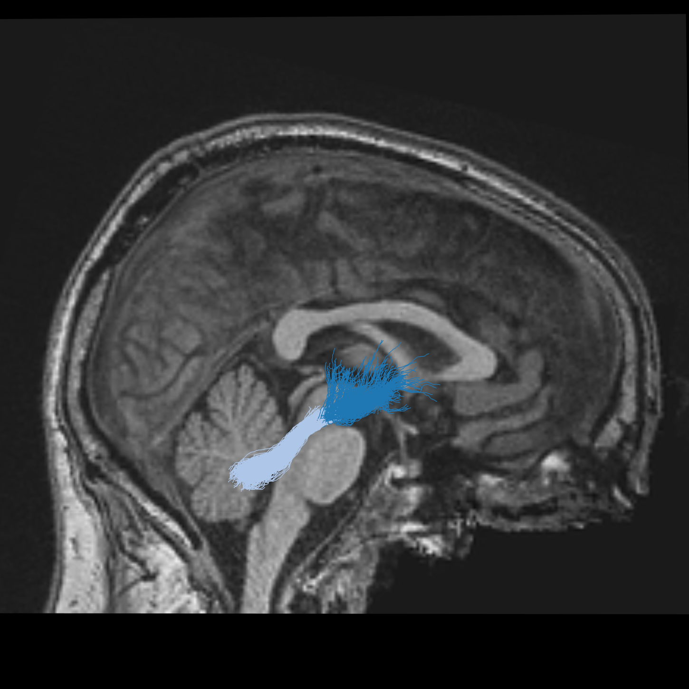
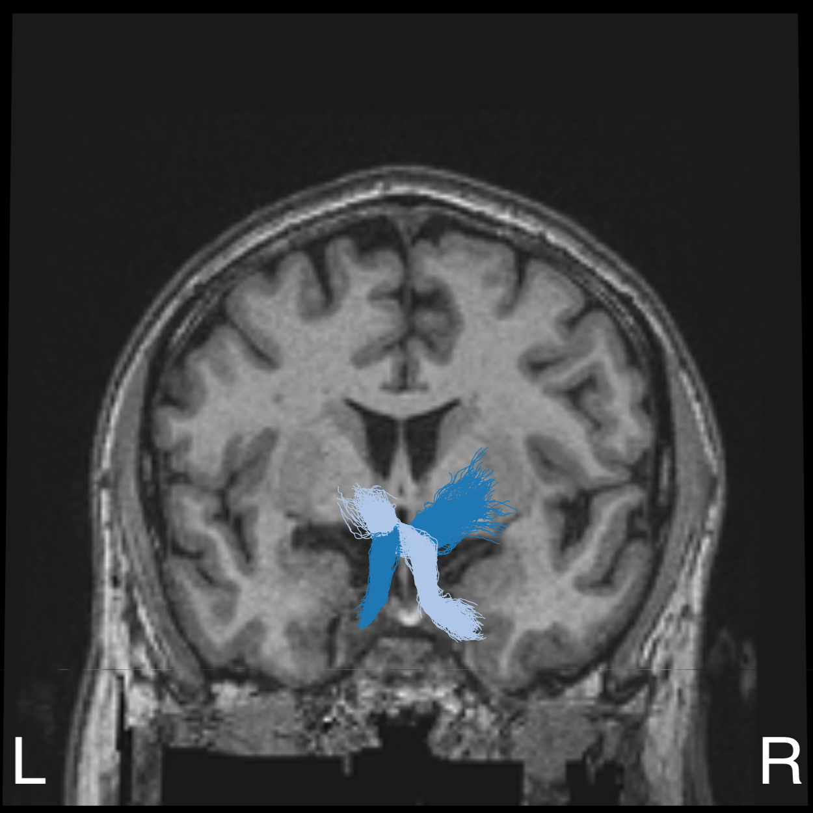
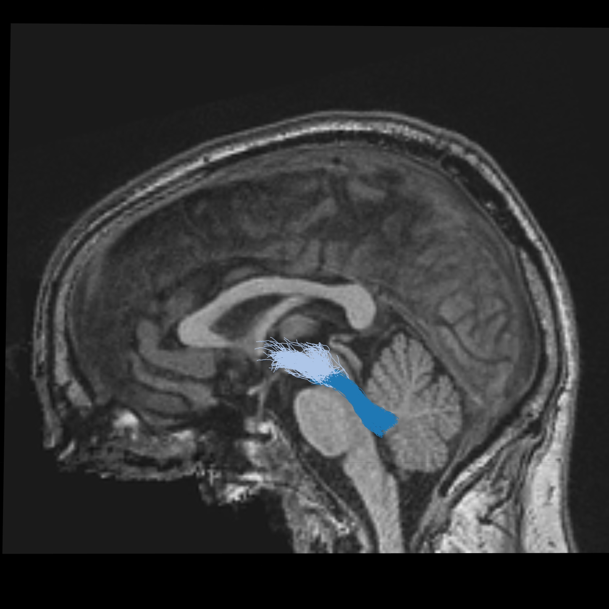
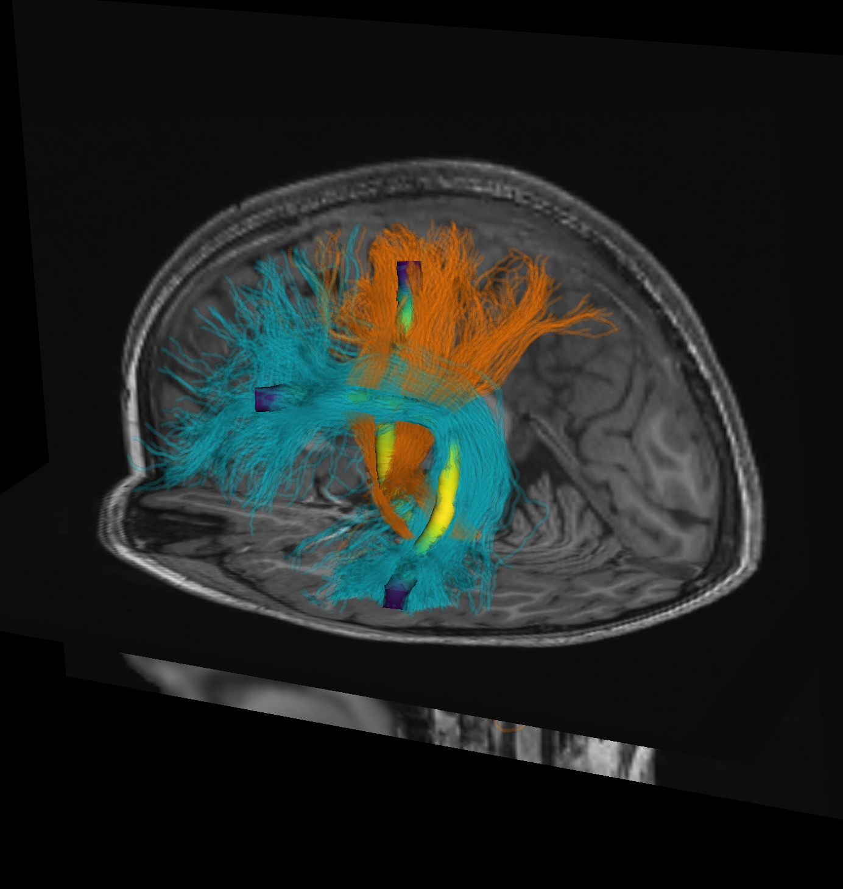
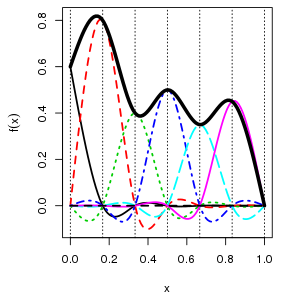

Structural cerebellar connectivity in schizophrenia: support for the cognitive dysmetria theory
Teresa Gomez1, Sivan Jossinger2, 3, John Kruper1, Adam Richie-Halford4, Michal Ben-Shachar2, Jason Yeatman3, Ariel Rokem1
1 Department of Psychology and eScience Institute, University of Washington
2 Gonda Multidisciplinary Brain Research Center, Bar-Ilan University
3 Functional MRI Center, Beilinson Hospital, Rabin Medical Center
4 Graduate School of Education and Division of Developmental-Behavioral Pediatrics, Stanford University

Background
- Schizophrenia (SZ) is a neurodevelopmental psychiatric disorder that carries significant health burden.
- The cognitive dysmetria theory of schizophrenia posits that the core cognitive deficits arise from dysfunctions of cortical-thalamic-cerebellar (CTC) circuits. (1)
- Previous research found increased functional connectivity in CTC in individuals at clinical high risk for psychosis. (2)
- This hyperconnectivity was more pronounced in individuals who converted to psychosis, correlated to the severity of symptoms, and was predictive of the time to conversion.
- The cerebellum sends its output through the superior cerebellar peduncle (SCP), the contralateral red nucleus (RN), and VA/VL of the thalamus to various cerebral areas. The decussation (d) of the cerebero-thalamo-cortical pathway is indicated by the yellow circle (image taken from (3)).
QUESTION: Are the physical properties of the white matter tracts of the CTC different in individuals with SZ?
Methods
Data:
- Diffusion MRI data (64 directions, b=1,000 \(s/mm^2\)) from the UCLA Consortium for Neuropsychiatric Phenomics LA5c study (Open Neuro DS00030).
- Participants: SZ (N=12F/37M, age: 36.2 \(\pm\) 8.8 SD), ADHD (N=20F/20M F/M age: 31.95 \(\pm\) 10.3), bipolar disorder (BD; N=21F/28M, age: 35.3 \(\pm\) 9.0), Healthy control (HC 58F/65M, age: 31.6 \(\pm\) 8.8).
Processing:
- QSIPREP (4) and pyAFQ (5) for preprocessing, QC, and tractometry (FA/MD tract profiles).
- Bilateral SCP were identified in each individual using anatomical criteria that capture the decussation (6).
- Group-blinded QC of SCP bundle was conducted by two expert observers (TG and AR).
Analysis:
- Data quality confounds were mitigated by matching each SZ/ADHD/BD to a HC with similar age, sex and data quality (neighbor correlations, NDC).
- Generalized additive models (GAMs) for FA and MD in each SCP as (7):
FA/MD ~ group + s(nodeID, k, by=group) +
with k chosen to minimize AIC and neighbor correlations (8) for QC.
age + sex + QC + s(subjectID, bs=“re”)
Acknowledgements
NIH grants: MH121867 (PI: Poldrack), MH121868 (PI: Rokem), EB027585 (PI: Garyfallidis)
Results
  
The left (dark blue) and right (light blue) SCP bundles visualized in an individual with SZ, with sagittal, coronal and axial anatomical views of the T1-weighted scan of this individual.
Tract profiles of MD (left) and FA (right) \(\pm\) bootstrapped 95% confidence interval
- Individuals with SZ had lower MD in left superior cerebellar peduncle (SCP) than HC (p<0.05).
- This finding held after adding medication as a covariate (haloperidol equivalent dosage).
- No significant differences were found in FA or in other group comparisons.
Conclusions
- We found decreased MD in SZ in the left SCP, a component of the CTC.
- In line with fMRI results that found increased functional connectivity in CTC in SZ. (2)
- Provides additional support for the cognitive dysmetria theory of SZ.
Software
pyAFQ: Automated Fiber Quantification / tractometry

Tractable: Statistical analysis of tract profiles in R

References
1. N. C. Andreasen et al., Schiz Bull. 24, 203–218 (1998).
2. H. Cao et al., Nature Communications. 9, 3836 (2018).
3. F. Palesi et al., Brain Struct. Funct. 220, 3369–3384 (2015).
4. M. Cieslak et al., Nat. Methods. 18, 775–778 (2021).
5. J. Kruper et al., Apert Neuro. 1 (2021).
6. S. Jossinger et al., Neurobiol. Lang., 1–40 (2023).
7. N. M. Muncy et al., Neuroimage Clin. 33, 102937 (2022).
8. F.-C. Yeh et al., Neuroimage. 202, 116131 (2019).